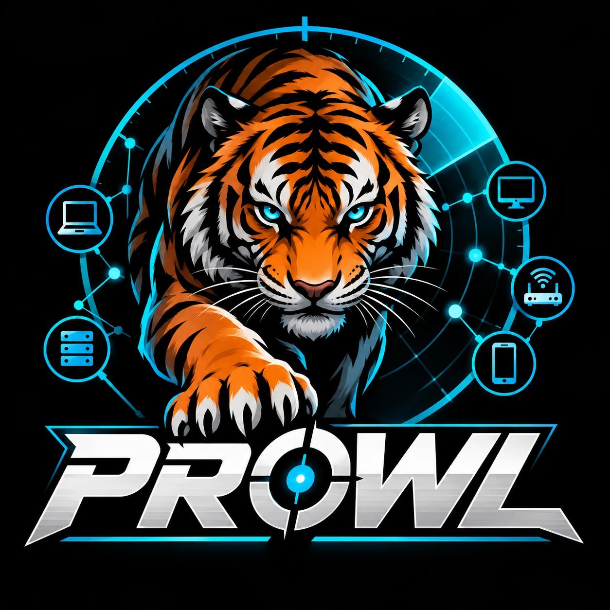

network baseline & reconCredentials are used for this one launch and never stored.
This tries up to two documented factory-default passwords per username on on-link devices only, stops at the first confirmed default, and changes nothing. It is a check for unchanged defaults — run it only where you are authorized to assess the network.